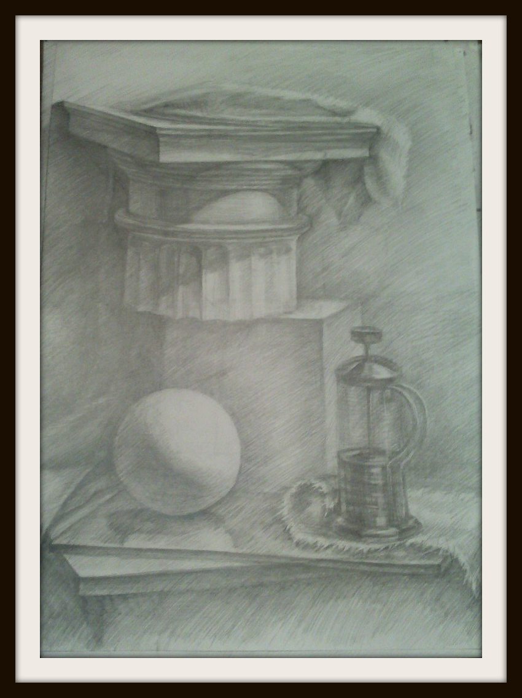

НАТЮРМОРТ – один из жанров изобразительного искусства, главным образом – живописи. В натюрморте изображаются только обиходные, т.е. повседневные, обыденные вещи, неодушевленные предметы. Это может быть различная снедь, т.е. пища, посуда, книги, статуэтки и т.п. Все живое, естественное, природное становится в натюрморте неодушевленным, мертвым (франц. «натуре морте» – букв. «мертвая натура») и приравнивается к вещам. Так, чтобы стать предметом натюрморта плоды и фрукты должны быть сорваны, звери и птицы – убиты, рыбы, морские животные – выловлены, цветы – срезаны. Вещи в натюрморте целенаправленно сгруппированы в единой среде, образуя мир искусственной реальности, в той или иной степени преображенной человеком. Художник не изображает вещи «с натуры», как они расположены в интерьере, а предварительно компанует их в соответствии со смысловой и художественной задачей.
В натюрморте вещи показаны в неподвижном состоянии, они пребывают в условном вневременном пространстве. Вещи даны как бы крупным планом, они увидены вблизи и рассмотрены в деталях. Композиция укрупняет малую «величину» вещей в натюрморте, вырывает их из обычного функционального контекста. Будучи произвольно, сознательно скомпонованный, натюрморт всегда содержит в себе некое сообщение, тайное письмо (криптограмму). Вещи превращаются в символы. Значения этих символов, содержание сообщений отличается большим разнообразием, но чаще всего носит мировоззренческий и даже философский характер. Например, некоторые «сюжеты» голландских натюрмортов 17 в. когда этот жанр достиг своей жанровой определенности и апогея. Один из сюжетов, получивший широкое распространение, – «ванитаз» (с латинского – «тщетность»). В натюрмортах этого вида часто присутствуют часы как символы быстротекущего, неумолимого земного времени, как эмблема преходящего земного существования. Типичным предметом часто выступает изображение черепа. Например, у Бартеля Брэйна он изображен в нише с клочком бумаги и изречением: «Ничто не защитит от смерти, поэтому живите так, как хотели бы умереть». Череп бывает окружен другими знаками бренности, например, колосьями (де Хем), светильниками с горящей или догоревшей свечой (Доу). На тщету земных наслаждений указывают игральные карты, курительные трубки (Класс). Часто встречаются клочки бумаги, рукописи, печатные издания с надписями типа «моменто мори» («помни о смерти»). Имеется много других примеров олицетворения раздумий над смыслом человеческого существования.
Работы нашего гостя:
